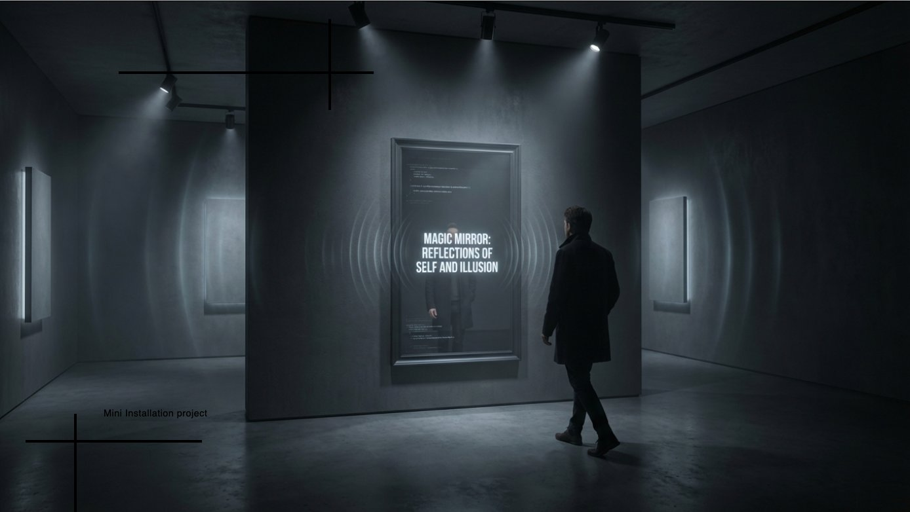

When a machine looks at you,
what does it see?
Every time we interact with an AI system, it is quietly categorising us — reading our gestures, expressions, and presence through layers of learned pattern and statistical inference. We rarely get to see the result. Mirror Mirror makes that invisible process visible, turning algorithmic perception into a tangible, aesthetic experience.
Visitors stand before the mirror as both subject and participant. The system observes — analysing facial expression, emotional tone, and voice — then generates a personalised portrait in real time, rendered through one of six distinct artistic styles. The portrait is not a photograph. It is the machine's interpretation of you.
How does AI categorise us? And what does algorithmic seeing reveal about the assumptions baked into the systems we build?
Algorithmic Legibility
Machine learning systems don't perceive neutrally — they carry the biases of their training data and design choices. This project asks visitors to reckon with that: the portrait you receive isn't who you are, but who the machine decides you look like.
Aesthetic as Argument
Six LoRA models — each encoding a distinct visual world — were designed as a spectrum of possible futures: utopian clarity, romantic warmth, brutalist rigour, surrealist unease, decayed beauty, and dystopian shadow. Style here is not decoration; it is meaning.
Each LoRA model was trained on a curated dataset selected to embody a specific aesthetic philosophy — not just a visual style, but a way of seeing and interpreting the world.
All six generated portraits — each produced by a distinct LoRA model encoding a different aesthetic world.
The face dissolves into bioluminescent particles and light — identity as something radiant, dispersing, becoming part of something larger than itself.
Rubens-style dramatic drapery, gold embroidery, glittering skin — the subject recast as a painting of overwhelming sensory richness and ornamental excess.
The face overlaid with Escher-style tessellations — a portrait constructed from interlocking pattern, suggesting a self built from repeating systems.
VHS thermal imaging reframes the subject as data — a heat signature captured by an indifferent system, reduced to signal and noise.
The face absorbed into botanical micro-texture — lily pads, spores, and cellular structures reclaim human form, skin becoming landscape.
Horizontal data-stream tears fragment the face into a collision of analogue grain and digital noise — identity dissolving under informational overload.
From concept render to a room full of visitors
Mirror Mirror was shown at the CAS AI for Creative Practices exhibition (ZHdK / UniBe) on 10 July 2026. Hung in a darkened space, the wooden-framed mirror conceals a display and camera behind two-way glass. Visitors put on a headset and are interviewed one at a time by Mira, the AI persona inhabiting the mirror — then receive a printed portrait of what it decided they were.


What the project set out to explore
- RQ 01 Can AI image generation be used to make algorithmic categorisation emotionally legible to a general audience?
- RQ 02 How do visitors respond when they receive an AI-generated portrait of themselves — recognition, estrangement, or something in between?
- RQ 03 What does the choice of artistic style — as a design decision — communicate about the values embedded in a machine perception system?
From concept to deployed installation
The project moved through three intertwined streams simultaneously: curatorial (selecting and assembling training datasets for each style), technical (training the LoRA models, building the computer vision pipeline, integrating real-time generation via Runware API), and spatial (designing the physical installation experience on Raspberry Pi 5 hardware).
Thousands of generated images were evaluated and fed back into prompt and model refinement — a process that was as much curatorial editing as it was engineering. The goal was not technical accuracy but aesthetic coherence: each portrait had to feel like it genuinely belonged to its assigned world.
The interview itself — Mira's five-minute dialogue with each visitor — runs on its own conversation architecture: intent trees, phase transitions, and error-recovery states for when the room is too loud to hear. Read the conversation architecture →